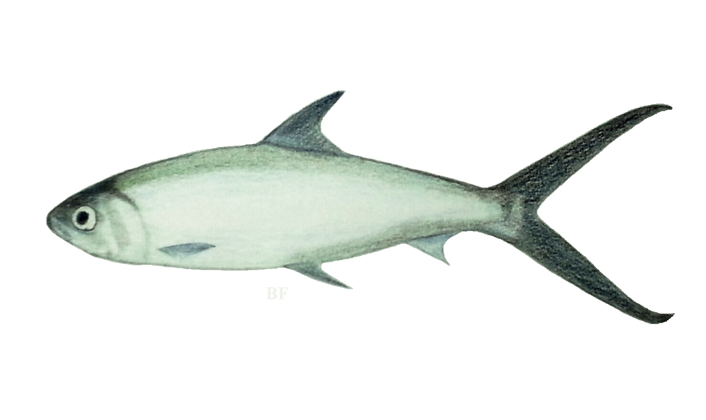

Milkfish(Bangus)
It can reach a weight of about 14.0 kg. and an average age of 15 years.
- Scientific Name: Chanos chanos
- Average Length: 99.06 cm
- Average Lifespan: 15 years
- Habitat: Tropical offshore marine waters
The milkfish is an important seafood in Southeast Asia and some Pacific Islands. Because milkfish is notorious for being much bonier than other food fish, deboned milkfish, called "boneless bangús" in the Philippines, has become popular in stores and markets.